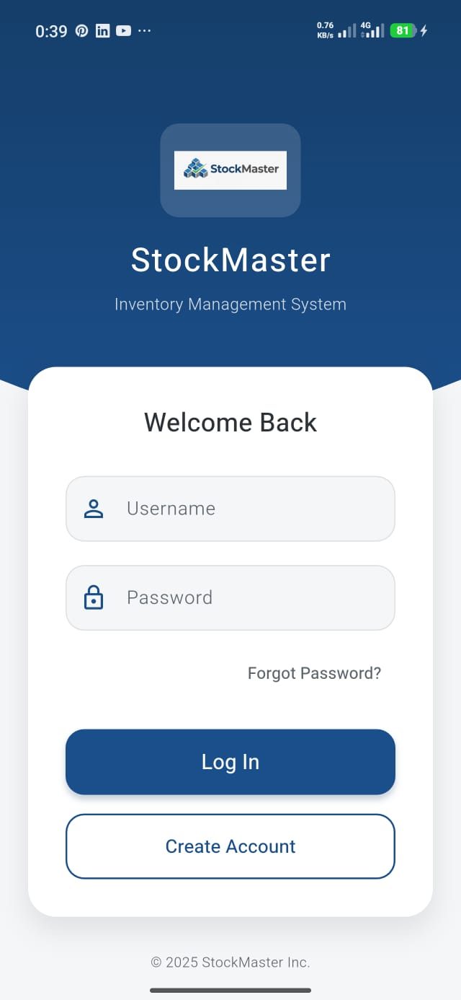

1. Authentification & Accès
Connexion
Accédez à votre espace avec votre nom d'utilisateur et mot de passe. Le système détecte automatiquement votre rôle (Admin/Employé).
Inscription
Nouveaux utilisateurs : créez un compte via le formulaire dédié. Le rôle "Employé" est attribué par défaut.

Figure 1 : Écran de connexion avec options "Mot de passe oublié" et "Créer un compte".
2. Tableau de Bord (Dashboard)
Le centre de contrôle de votre activité. Il affiche en temps réel :
- Valeur Totale : Estimation financière du stock actuel.
- Alertes : Nombre de produits en rupture ou stock faible.
- Graphique : Tendance des mouvements (Entrées vs Sorties).
Figure 2 : Vue synthétique des performances.
3. Gestion des Produits
Accessible via le menu de navigation principal.
Fonctionnalités de la Liste
- Recherche : Filtrez instantanément par nom ou SKU.
- Tri : Organisez par prix, quantité ou ordre alphabétique.
- Scanner : Utilisez le bouton QR Code pour trouver un produit via la caméra.
Figure 3 : Liste des produits avec indicateurs de stock (vert/orange/rouge).
Ajout / Modification
Le formulaire permet de renseigner : Nom, Catégorie, Prix (Achat/Vente), Fournisseur et d'associer une image (Galerie ou Caméra).
4. Mouvements de Stock
Pour garantir la traçabilité, chaque modification de quantité passe par une action "Entrée" ou "Sortie".
Figure 5 : Journal complet des transactions avec filtres par date.
5. Paramètres & Configuration
Le menu paramètres est divisé en plusieurs sous-sections pour une gestion fine.
A. Utilisateurs & Rôles (Admin)
Gérez les comptes de vos collaborateurs et définissez précisément qui a le droit de voir les rapports ou modifier le stock.
B. Produits & Données
- Catégories : Ajoutez ou supprimez des catégories de produits.
- Import CSV : Importez des produits en masse depuis un fichier CSV ou JSON.
C. Rapports & Stats
Visualisez les performances et exportez les données.
- État du Stock : Tableau détaillé valorisé.
- Top Ventes : Les produits les plus performants.
- Pertes : Analyse des sorties pour motif "Perte" ou "Vol".
- Export PDF : Générez un rapport imprimable officiel.